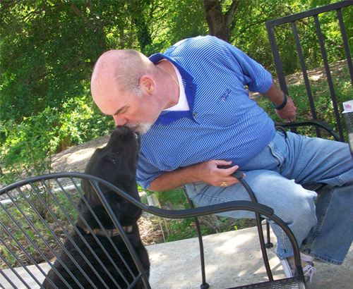
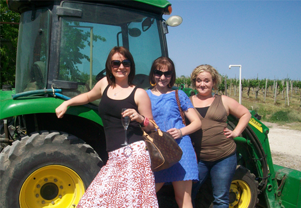
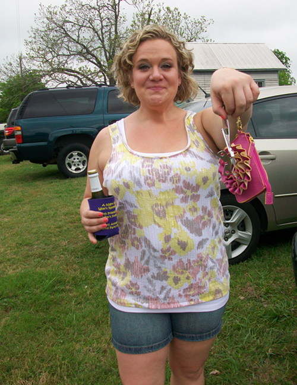
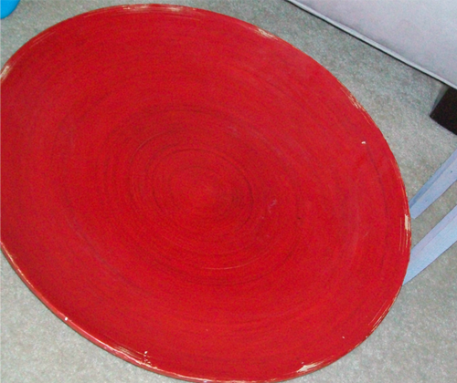
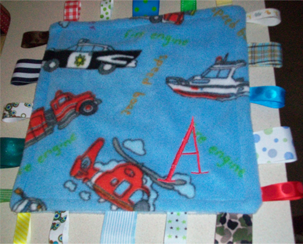

I stumbled across these beauties at Payless and it was love at first sight. They have everything I could want in a spring/summer shoe : open toe, wedge heel, and cute nautical colors. Â I’m sold.
Trece
April 21, 2011 by

That’s how many days til Cinco de Mayo. (13 peeps, get your Spanish on) I’m already planning my get up and I think I’ll be sippin margaritas wearing some of this gear.
- Old Navy, Mexicali Top
- Old Navy, Embroidered Gauze Top
- Topshop, Shift Dress
- Forever21, Siesta Top
- Forever21, Mexican Maxi Dress
- Forever21, Peasant Top
- Forever21, Tassel Scarf
- Forever21, Festive Top
Bangled Up
April 20, 2011 by

I love me some bangle bracelets. They are the perfect accessory for spring/summer (you can’t wear them with long sleeves, afterall) and they can add the perfect finishing touch to an outfit. Forever 21 has so many cute options out this season and all for under 8 bucks! Here are a few I have my little eye on…
Gettin’ Tanked
April 19, 2011 by

I checked my local weather forecast for this week and was barely able to hold back my cry of protest. Over 90 degrees every single day, and its only the middle of April. That means from here on out I will be wearing tank tops every single day. Here are a few options I wouldn’t mind having in my rotation…
- Forever 21, Embroidered Braided Strap Tank
- Forever 21, 100% Silk Polka Dot Tank
- Modcloth, Fizzy Delight Tank
- Modcloth, Tropical Daydream Tank
- Walmart, Asymmetric Ruffle Tank
- Target, Merona Collectoin Beven Top
- Modcloth, Spoke Too Schooner Top
- Target, Journee Collection Teired Tank Top
Wine Tasting Adventures
April 18, 2011 by
So this past weekend Der, Court, and I went to Messina Hof Winery, a Texas winery that happens to be located in the same town as my college. Needless to say, it was quite an adventure.

We started the day tasting wines at the wine bar.

Der was not a fan of any of the red wines we tried.

We the ventured out to the patio where we met a man who showed us how the “winery” dog will eat a cracker from your mouth. Turned out the dog was a stray.

Then we took a walk through the grounds where Court fell off of this bridge. Don’t worry, we made sure she was okay before we laughed.
Der then explained to Court that just because she fell of a bridge, it doesn’t mean her hair looks bad (just so she would take a picture with us). That turned out to be a very true statement.

We ended the day leaning on a tractor. Why, I do not know. But we look good doing it 🙂
Ruche It Up
April 15, 2011 by

I am here to introduce you ladies to a new website I have discovered. Shopruche.com. For those of you who have never heard of this, it is kind of like modcloth, but a little less expensive and not quite as weird. For those of you who have heard of this, WHY DIDN”T YOU TELL ME SOONER??? Soo many cute options that could have already been in my wardrobe…
Hump Day Happy Hour: La Jota
April 13, 2011 by

This wine was purchased by my aunt based off a recommendation from the owner of our local WineStyles, a store/bar for all things wine related. It might be the best red wine I have ever had.  When the bottle was empty I was definitely wishing there was another available, although I may have been a little too tipsy to properly enjoy it 🙂 Its a little pricey for an everyday table wine, but it would be perfect for a special occasion or just a splurge.
A Little Weiner Love
April 13, 2011 by

Der posted recently about all the weiner dog finds available for babies but we have been remiss in our duties to all you weiner loving ladies out there. So here you go ladies, enjoy!
- Modcloth, Are Weiner There Yet? Luggage Tag
- Modcloth, Blue the Dachshund Necklace
- Walmart, Women’s Graphic Short Sleeved Tee
- Etsy.com, Happy Dachshund Display Platter
- Etsy.com, Dachshund Ring -This item will probably be on my finger in the very near future. Too cute!!
- Etsy.com, Picasso Weiner Dog Pendant Necklace
- Etsy.com, Custom Dachshund T-shirt
- Etsy.com, Keep Calm and Carry A Dachshund Pillow
Limitless
April 12, 2011 by
Has anyone else browsed The Limited’s website or store lately? I had no idea they had such cute clothes, and they are pretty reasonably priced. I have shared a few items with you in previous posts, but here are a few more items I am drooling over…
Round Top Roundup 2011
April 7, 2011 by
This past weekend I joined Tipsy ladies Court and Der on their annual trip to the big antiques/craft show in Round Top, Tx. Unfortunately, the other half of the Tipsy Society were unable to attend due to all the babies being born around here. Â We drank too much beer, spent too much money, and ultimately had a blast. Here are some memories from that day…
We learned from the lady at the gas station, who may or may not have been drinking on the job, that Round Top is officially the smallest town in Texas

Court obtained a new tool to go along with her mini champagne, and a cute new wristlet.

We came prepared with a travel beer cooler to help us make it through the day.

Court hesitated about this giant red bowl, and Der swooped in and bought it.

She also found a very cute personalized blanket for Aiden.

I found a cute little green end table for dirt cheap.

And Court splurged on a beaded cross cuff bracelet, which she talked about every 5 minutes for the rest of the day.


{kind=link}
Recent Comments